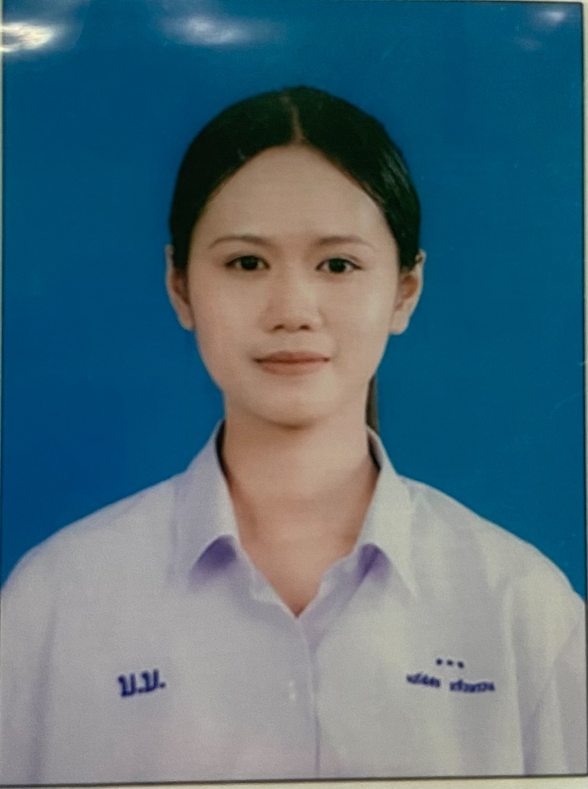

THANK YOU
ขอขอบพระคุณท่านคณะกรรมการเป็นอย่างสูงที่ได้เสียสละเวลาอันมีค่าในการรับชมและพิจารณาแฟ้มสะสมผลงานฉบับนี้
ข้าพเจ้าหวังเป็นอย่างยิ่งว่าจะได้รับโอกาสเข้าศึกษาต่อในคณะสาธารณสุขศาสตร์ มหาวิทยาลัยบูรพา เพื่อมุ่งมั่นเรียนรู้และนำความรู้มาพัฒนาสังคมต่อไปค่ะ
มหาวิทยาลัยบูรพา
คณะสาธารณสุขศาสตร์